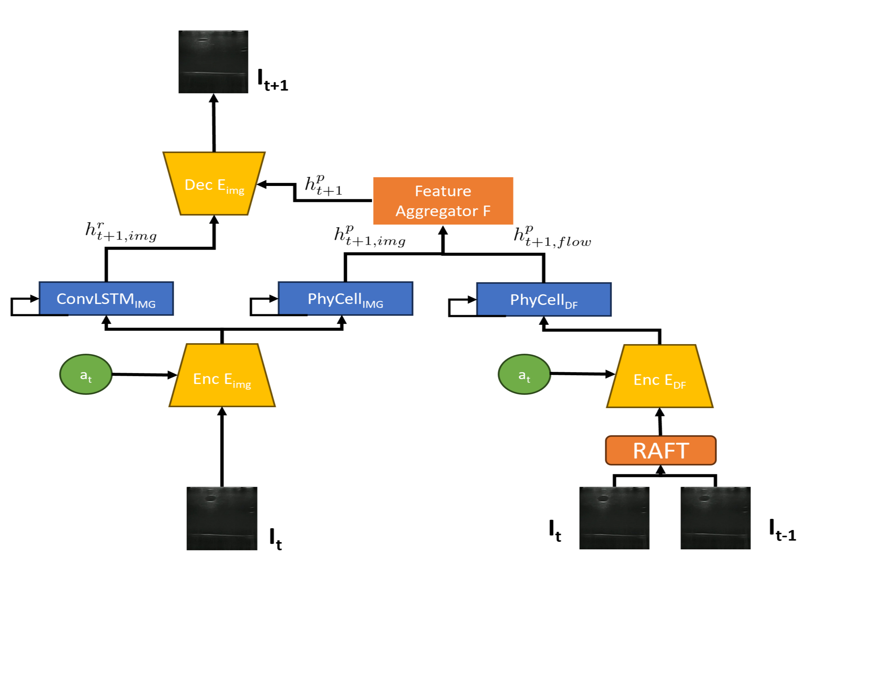

|
FNU Abhimanyu I am a recent graduate from Masters in Robotics(Research) from Carnegie Mellon University where I worked with Dr. Howie Choset and Dr. John Galeotti at the Biorobotics Lab, where I worked on computer vision and machine learning. At CMU, as a master's student and as a research staff, I have developed CV/ML solutions for medical robotics as well as e-waste recycling. My master's thesis was on automating robotic ultrasound systems and improving ultrasound imaging using deep learning methods. I developed an NN-based 2D soft-body simulator for simulating ultrasound images at different force values. I also developed unsupervised deformable registration for predicting the movement and deformation of vessels in ultrasound images. For e-waste recycling, I developed algorithms in the area of fine-grained image classification, 2D/3D semantic segmentation, 3D reconstruction and robotic manipulation. My other projects also encompassed topics like novel view synthesis using NeRF and 6D pose estimation using images. |
{kind=link}
ResearchI'm interested in computer vision, machine learning, robotics, |
Updates
|

|
U-RAFT: Unsupervised Deformable Ultrasound Image Registration and Its Application for Vessel Segmentation
FNU Abhimanyu, Andrew L. Orekhov, Ananya Bal, John Galeotti, Howie Choset IROS, 2023 (Oral Presentation) paper / video Making RAFT training unsupervised and applying it to predict vessel deformation under forces in ultrasound images. We use this further to generate ultrasound images at multiple force values and improve segmentation by 12% |
|

|
Phy-UGen: Simulating ultrasound image compression by using physics based NN [NOT PUPLISHED]
FNU Abhimanyu, John Galeotti, Howie Choset slides Uses a physics based neural network (PhyDNet) to simulate ultrasound image compression under the application of forces. |
|
|
Unsupervised Deformable Image Registration for Respiratory Motion Compensation in Ultrasound Images
FNU Abhimanyu, Andrew L. Orekhov, John Galeotti, Howie Choset ICRA, RAMI Workshop, 2023 poster Use Unsupervised RAFT (U-RAFT) to track pixel-movements in lung-ultrasound images to cancel the movement and reconstruct the fixed image. Reduce the pixel movement by 76%. |
|
Feel free to steal this website's source code. Do not scrape the HTML from this page itself, as it includes analytics tags that you do not want on your own website — use the github code instead. Also, consider using Leonid Keselman's Jekyll fork of this page. |